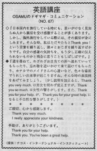

ご親切、心から感謝します。
It happens that a stranger will often show kindness to tourists during a trip. Even if you are traveling in Japan. If you travel in foreign countries, you will appreciate their kindness more than you would at home. When people were kind to Osamu, all he could do was bow deeply and say thank you over and over. So he often wondered what he could say to express his true feelings. Americans don't say thank you over and over. They will say it just once. You can also write letters. Americans might think Japanese go to the extremes because they apologize, bow and thank so much.
日本国内を旅行している時にも思いがけなく見しらぬ人から親切を受け感激することが多くあります。しかし、海外旅行をしている際には、その親切が身にしみます。そんな時、私はただやたらとThank you! という言葉を繰り返し、深々とおじぎを繰り返すばかりです。自分の感謝の気持ちを、もう少しきちんと伝えられないものかと残念に思うこともしばしばです。
道を尋ねて、わざわざお目当ての所へ連れて行ってもらったり、忘れ物を追いかけて来て届けてもらったり、ホテルでのメイドさんの心遣いなど、色々な場面をあげてみましょう。
（少し説明を加えると、Thank you very much. は男女問わずに使えますが、Thank you so much. は女性の響がします。また、Thank you for your help. が、Thank you for your great help.になると不自然な響がします。）
ご親切、心から感謝します。
Thank you very much.
I really appreciate your kindness.
手助け、ありがとうございます。
Thank you for your help.
Thank you. You’ve been a great help.

| © 1995-2013 NACOS International Institute. All Rights Reserved. |